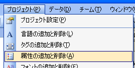
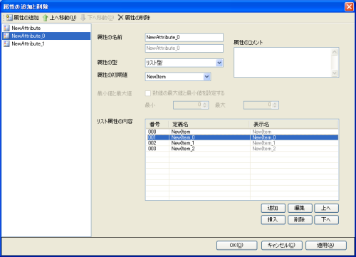
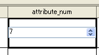
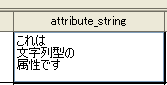
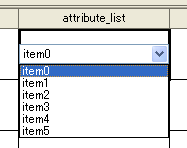
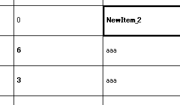
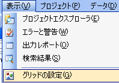
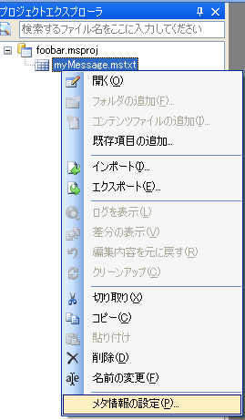
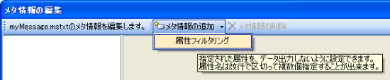

属性設定について
属性とは？
コンテンツファイルの種類のひとつである、 メッセージファイル(*.mstxt)には、複数のテキスト行が含まれます。 そのテキスト行ごとに、特殊な設定を付加してゲーム側から読み取ることができます。 それを、属性と呼びます。
属性情報を設定しても、それをどのように扱うかはゲームの仕組みによります。 そのため、属性情報は開発チームで協議のうえ、自由に設定することが出来ます。 今まで、属性情報は主に以下のような用途で利用されてきました。
- テキストの見え方(センタリングにするのか、左寄せにするのか)
- このメッセージを表示するときに、どのカメラで表示するのか
- このメッセージが表示されたときに、 NPC(プレイヤーが操作しない登場人物)との好感度がどの程度上昇するのか
- 話しかけたときにどのような効果音をならすか
- メッセージが表示される条件(何時に表示されるか？など)
- 表示されたときにもらえるアイテム
どのような属性を作るかはゲームの仕様やハードウエアの性能(メモリ容量)などに よっても左右されることがあります。どのような設定項目が必要であるかなど、 詳しくは担当プログラマの方とよく相談の上決定してください。 もちろん、属性を利用しないということも出来ますし、あとから利用し始めるということも可能です。
属性を設定するには
属性を設定するときは、まずメインメニューの「プロジェクト」から「属性の追加と削除」を選択します。

すると、属性の設定ダイアログが現れます。 このダイアログの左側に、現在登録されている属性の一覧が表示されます。 なお、プロジェクトウィザードを利用してプロジェクトを作成しても、最初は何も登録されていません。

属性の追加や削除は上のメインツールバーから行ってください。 左側で属性を選択すると右側のペインに設定項目が出てきます。
属性の型について
属性には、それぞれ「型」を設定できます。 その属性がそれぞれどのような情報を持つかという設定です。 大きく分けると、「数値」「文字列」「リスト」の三種類に分けることが出来ます。 数値型にはさらに複数の種類がありますが、 このうちどれを利用するかはプログラマの判断に従ってください。
数値型として属性を定義すると、指定された範囲内の数字をテキストに設定できます。 これにはさまざまな用途があり、たとえば、メッセージを表示した後に 増減する所持金の量などを表すことが出来ます。 数値属性を追加すると、セルには数値入力コントロールが表示されます。

文字列型を利用すると、文字列情報を属性として付加できます。 入力された文字はゲーム内で読み込むことが可能ですが、 属性の文字列は翻訳するには不便なので用途が限られるでしょう。 主に何かの識別子として利用されることが想定されます。 (たとえば既読フラグの名称として、など)

リスト型を利用すると、 定義されたアイテムのうちどれか一つから選択することができる属性を作ることができます。 たとえば、メッセージが表示されるときに鳴る効果音を属性で設定する場合、 これを数値属性として定義してしまうと使う側には非常に面倒なことが起きます。 効果音ID0がこの音、効果音ID1がこの音、のように対応付けを自分たちで管理せねばならず、 また、パッと見てもID番号だけが書いてあると意味もよく分かりません。 リスト型では、最終的には数字として(つまりIDとして)出力されますが、 編集時には定義されたうちの一つしか選ぶことが出来ません。 名前をつけることが出来るので一覧性も上がります。

定義名と表示名
Message Studioでは、属性を定義名によって識別します。 定義名には、ASCIIによって定義される文字のみを利用することが出来ます。 それとは別に、編集がやりやすいように別の名前をつけることが出来ます。 これを「表示名」と呼びます。 この表示名には、Message Studioのユーザーインターフェイスの 言語設定に応じて複数の名称をつけることが出来ます。
デフォルト値について
属性には、デフォルト値を設定します。 デフォルト値とは、ユーザーが明示的に入力しなかった場合に属性セルに適用される値のことです。 最もよく利用されるような値(例えば、「ゲーム内通貨の増減」であれば0、「アイテムの追加」であれば「なし」など)を デフォルト値として登録されておくことを推奨します。
属性で、ユーザーが明示的に設定したセルは、ボールド体のフォントで強調表示されます。 セルでDeleteキーを押下すると、ユーザーが明示的に設定した値は削除され、デフォルト値に戻ります。

属性セルのボールド体表示機能を無効化するには、 「表示」メニューから「グリッドの表示設定」を選択します。

属性設定時の注意事項(プログラマの方へ)
倍精度浮動小数点型(double)について
倍数度浮動小数点型(double型)は、64bitの情報量を持つ属性を扱うことが出来ます。 しかし、ゲームのプロセッサによってはdouble型の扱いはあまり得意ではない場合があります。 特にNintendo DSなどでは計算時間的に不利になりやすいので、 十分注意して設定を行ってください。
アライメント調整について
Message Studioは、入力された属性はすべて上から順番どおりに並べた構造体として出力します。 属性の構造体はパディングを入れずにぴっちり並ぶため、定義する順番によっては著しくパフォーマンスが低下します。 たとえば32bitプロセッサに対して、以下のような順番で属性を定義したとします。
- libms_s8_t(符号あり8bit整数)の属性
- libms_s32_t(符号あり32bit数値)の属性
このように並べてしまうと、二つ目の属性が32bitの境界を超えて配置されてしまうため、 アクセスするために無駄な命令を挟まなければならなくなる場合があります。 このような状況を避けるためには、無駄と分かっていても、最初の型を32bitとして境界に合わせます。 こうすることで、それぞれの値は境界に正しく配置されます。 なお、Message Studioには属性のパディングを入れる機能は備わっていません。
属性出力フィルタリング
プロジェクトに設定された属性情報は、 全てを全ての場面で利用するとは限りません。 例えば、「ゲーム内通貨増減」という属性があったとしても、 この属性はエラーメッセージでは利用されません。 全てのテキストに対して属性情報を出力すると、それだけメモリを余分に消費し、効率的ではありません。

そこで、特定のメッセージファイル(*.mstxt)において、 属性データを出力させない設定をメタ情報として行うことが出来ます。 まず、フィルタリングを有効にしたいファイルまたはフォルダを プロジェクトエクスプローラ上で右クリックし、「メタ情報の設定」を押下します。

「メタ情報の追加」から「属性フィルタリング」を選択し、 フィルタリングしたい属性の名前を入力してください。 なお、ここで入力する属性の名称は定義名であり、表示名を入力しても有効にはなりませんのでご注意ください。